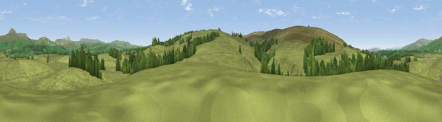

Viewpoint near Clapham
#26181 in England · top 69% of its area beats it · near ClaphamWhere it is
The exact computed spot (SD 72675 65775). Click the marker for map links.
The view, rendered

A 360° render of this exact spot computed from the terrain model, tree cover and land cover — summer colours, afternoon light, calibrated against photographs of famous viewpoints. Real trees, hedges and buildings will differ in detail.
The panorama
Grey silhouette: terrain skyline in each direction (720 bearings, Earth curvature and refraction included). Dashed green: skyline with trees (+15 m) and buildings (+8 m) as obstacles. Blue strip: how far the ground is visible on each bearing.
Where the view opens
Wedge length = distance to the farthest visible ground on that bearing (vegetation-aware). Rings at 10, 25 and 50 km.
What fills the view
90% grassland · 9% woodland
Angular shares of the visible panorama (visual magnitude), not map area. Landscape diversity 0.15 (0–1 Shannon).
Key numbers
More beautiful places nearby
The staircase of upgrades: each row has a higher view potential than everything closer. Driving times are estimates from straight-line distance, calibrated against real road routing — check an actual route before setting out.
| Place | Direction | Drive | Score |
|---|---|---|---|
| Viewpoint near High Bentham | W · 3 km | ~7 min | 66.1 |
| Burnmoor | WSW · 3 km | ~8 min | 69.6 |
| Viewpoint c9214_7456 | S · 5 km | ~11 min | 72.4 |
| Hailshowers Fell | SSW · 6 km | ~12 min | 73.8 |
| Viewpoint near Clapham | N · 6 km | ~13 min | 74.2 |
| Little Ingleborough | NNE · 8 km | ~16 min | 78.8 |
| Viewpoint near Ingleton | N · 9 km | ~18 min | 79.5 |
| Whernside | N · 16 km | ~28 min | 79.9 |
54.08715, -2.41922 · source: screening · position refined by local search. Computed location — check access rights before visiting.